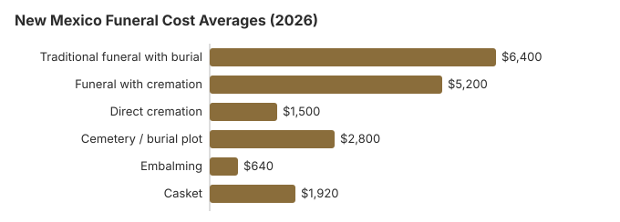

Funeral Costs in New Mexico: What Families Pay in 2026
Arranging a funeral in New Mexico is not one decision but dozens, and each one carries a price tag that is almost always negotiable. From the service fee to the casket, from the cemetery plot to the headstone, every line item in New Mexico has a range, and knowing that range is the difference between a $5,120 bill and an $8,000 one. Here is what current pricing looks like across New Mexico.
New Mexico Funeral Prices by Item
The following table shows the average costs for common funeral services in New Mexico. Individual prices in New Mexico still vary by provider, and the NM Board of Thanatopractice licenses New Mexico homes without setting their prices.
| Service | Average Cost | Range |
|---|---|---|
| Traditional funeral with burial | $6,400 | $4,800 – $8,320 |
| Funeral with cremation | $5,200 | $4,160 – $6,760 |
| Direct cremation | $1,500 | $1,050 – $2,100 |
| Cemetery / burial plot | $2,800 | $1,400 – $5,600 |
| Embalming | $640 | $500 – $1,500 |
| Casket | $1,920 | $640 – $5,120 |
Methodology note: These figures are our estimates, not a survey of local providers, and they are not a quote or professional advice. See how we calculate them or read the full disclaimer.
State sources: New Mexico Board of Funeral Services; Bureau of Vital Records and Health Statistics; NMSA § 24-13-1.

Hidden Funeral Fees in New Mexico: What to Watch For
Quoted prices in New Mexico rarely include every charge.
- Be wary of an embalming charge presented as required: in New Mexico it almost never is.
Cremation vs. Burial in New Mexico
Cremation
- Direct cremation from $1,500
- Cremation with service from $5,200
- No cemetery plot required
- More flexible memorial options
- Current rate: 65% of families
Traditional Burial
- Traditional service from $6,400
- Cemetery plot from $2,800
- Vault or liner typically required
- Permanent memorial location
- Metal casket: about $2,500 national median (NFDA 2023 General Price List Study); New Mexico prices vary by seller
Why Funeral Prices Vary in New Mexico
Part of every New Mexico quote is the building itself. Board rules make a licensed establishment keep a chapel of at least 600 square feet seating 60 or more, a casket display room of at least 450 square feet showing no fewer than 12 adult caskets or models (with the caskets warehoused within 50 miles), and refrigeration with at least 12 and one-half cubic feet per body (16.64.4.8 NMAC). Those fixed costs, plus local competition and land prices, are why Mountain pricing still sits below the US median of $8,300 yet a city chapel and a small-town one in New Mexico can quote 10-30% apart.
At 65%, New Mexico's cremation rate is 1.6 points above the 63.4% national rate that NFDA projected for 2025.
The Least Expensive Ways to Hold a Funeral in New Mexico
| Option | Estimated Cost | What's Included |
|---|---|---|
| Direct cremation | $1,500 | Cremation with no viewing or service; New Mexico needs a permit but sets no fixed wait (NMSA 61-32-19). |
| Direct burial | $3,200 | No embalming or viewing; New Mexico cemetery plot, opening and closing are billed apart. |
| Green burial | $3,520 | No embalming and a biodegradable shroud or casket; ask which New Mexico cemeteries allow it. |
| Cremation + memorial | $5,200 | Cremation followed by a separate memorial service; 65% of New Mexico deaths now end in cremation |
| Traditional funeral | $6,400 | Full service with viewing, ceremony, and burial, 23% below the $8,300 NFDA median |
What's Specific to New Mexico (Mountain)
New Mexico has some of the more progressive disposition laws in the country, including accommodations for home funerals and family-led arrangements in several counties. If your family wants a less commercialized approach to a New Mexico funeral, it is legally easier here than in much of the Northeast, though you still need to comply with death certificate, transportation, and disposition paperwork. Our home funeral guide covers the steps a New Mexico family would take.
What the Law Guarantees You in New Mexico
Other New Mexico Guides on This Site
In New Mexico a cremation waits for the Office of the Medical Investigator's permit, and a burial adds a plot from about $2,800, and both guides set out the costs:
Cremation Costs in New Mexico
Our New Mexico cremation page walks through direct cremation from $1,500 and a cremation with service from $5,200, how the medical investigator's permit works, what urns cost and where ashes may be scattered. About 65% of deaths in New Mexico end in cremation.
Burial Costs in New Mexico
The New Mexico burial page itemizes what the cemetery charges on top of the funeral home: plots from $2,800, opening and closing, vaults and headstones, with caskets priced separately. All in, a New Mexico burial runs from $14,140 to $18,640 on our figures.
Where New Mexico Families Can Find Money for a Funeral
- A New Mexico county of residence can pay up to $1,000 toward a disposition when there is no estate, from its general or health-care assistance fund (NMSA § 24-13-3).
- Social Security's $255 is separate from the county's $1,000 help under NMSA § 24-13-3; only a New Mexico surviving spouse or eligible child can claim it, at 1-800-772-1213, within two years.
- The VA burial allowance is claimed by whoever paid the bill, using Form 21P-530EZ; for a non-service-connected death on or after October 1, 2026 it reaches $1,032 toward burial and another $1,032 toward a plot. A family that skips the chapel entirely can use a New Mexico direct disposer, who must hand over a written statement first saying it cannot hold rites or provide facilities for them and allows no viewing except to identify the body (16.64.9.8 NMAC). Who qualifies is set out in our veteran burial benefits guide.
- If the county indigent office cannot help, our funeral payment assistance guide is the next place to look, with how to pay for a funeral with no money for families in New Mexico with nothing set aside.
Educational Resources
- Payment Assistance GuideGovernment programs and financial help for funeral costs
- Funeral Consumers AllianceIndependent nonprofit consumer advocacy for funeral rights
- Insurance Plan ComparisonCompare coverage, premiums, and payout speed across providers
- Best Burial Insurance CompaniesSide-by-side comparison of top burial insurance providers
- Funeral Insurance GuideCompare final expense and burial insurance options
- FTC Funeral RuleThe federal rule protecting funeral consumers
Compare Funeral Costs
- Direct Cremation: Most Affordable OptionNFDA 2023 median $2,645 with a family-supplied container (latest available)
- Cremation vs. Burial Cost ComparisonSide-by-side price comparison to help you decide
- How to Compare Funeral PricesStep-by-step guide to getting the best price
- Funeral Cost BreakdownEvery line item explained: know what you're paying for
- Cheapest Funeral OptionsLower-cost alternatives, with typical price ranges
- Average Funeral Cost in 2026National cost breakdown with real prices
New Mexico Funeral Costs by City
Funeral costs vary across New Mexico's major metropolitan areas. Here are the major cities in New Mexico:
Planning a Funeral in New Mexico: Where to Start
Families arranging a funeral in New Mexico for the first time often move faster than they need to.
- Decide on disposition: cremation in New Mexico or burial in New Mexico.
New Mexico death certificates: $5 each
New Mexico charges a $5 non-refundable search fee per certified copy when the record is on file. VitalChek orders cost $21 with regular mail or $39.50 with next-day UPS (NM Department of Health, death certificates; checked October 29, 2026).
- Restricted: only immediate family (parent, sibling, child, current spouse or grandparent) or someone with proof of a legal interest may order until 50 years after the death.
- Only in Santa Fe: public health offices do not issue death certificates; use the Bureau of Vital Records at 2554 Camino Entrada (505-827-0121) or mail P.O. Box 26110, Santa Fe, NM 87502, with a certified check or money order.
Who regulates New Mexico funerals, and what the state will pay
The New Mexico Board of Funeral Services, part of the Regulation and Licensing Department, licenses every funeral home in the state. Its line, 505-476-4622, is the one to use if a home will not give you its price list, quotes one figure and bills another, or presses you to sign before you have compared. Board staff can also confirm that a license is current before you hand over a deposit.
New Mexico does not make families hire a funeral director: the Funeral Consumers Alliance leaves it off its list of nine states with that requirement. A family can therefore buy only the pieces it needs, such as transport and filing, and handle a home vigil or a church service itself. Two documents are needed whoever does the work: the death certificate and the disposition permit.
Death certificates from Santa Fe
The Bureau of Vital Records and Health Statistics issues certified copies. Through VitalChek a copy is $21.00 by regular mail or $39.50 by next-day air. Banks, insurers and pension plans often each want their own certified copy, so count them up before ordering.
If the family is choosing cremation
The state sets no minimum wait, but nothing can be cremated until the Office of the Medical Investigator issues a permit and the next of kin signs an authorization (NMSA 61-32-19). In practice the permit, not the calendar, sets the pace, so ask the funeral home how long the medical investigator is taking that week.
When there is no money
The safety net here is the county. If a body goes unclaimed, the county must authorize burial or cremation within 30 days after it is found unclaimed, and not sooner than 14 days after death (NMSA § 24-13-1). Where the person left no estate, the county of residence can contribute up to $1,000 from its general or health-care assistance fund (§ 24-13-3). That cap is well below the $6,400 average traditional funeral in the table, so a county-paid service will usually be a direct cremation or a simple burial. Social Security adds only $255, and only for a qualifying spouse or child who claims it within two years; it is paid to the family, never to the funeral home.
Veterans in New Mexico
Both national cemeteries in the state, Fort Bayard National Cemetery and Santa Fe National Cemetery, share the number 505-988-6400, and a funeral home books the grave through the VA's National Cemetery Scheduling Office (800-535-1117). Three state veterans cemeteries take requests directly: Angel Fire (505-225-4341), Fort Stanton (505-205-6707) and Gallup (575-921-3494). At the national cemeteries an eligible veteran's grave, opening and closing, and marker cost the family nothing, so the $2,800 plot line in the table drops off; ask a state cemetery what, if anything, it charges.
A short New Mexico checklist
- Collect a General Price List from each home you are considering; the FTC Funeral Rule entitles you to one in person.
- Price a memorial service held after cremation or burial, which leaves out embalming and a viewing.
- Speak to the county indigent office about the $1,000 limit before anything is booked.
- For a veteran, ask about Santa Fe National Cemetery before buying a private plot.
- Take pricing complaints to the board at 505-476-4622.
Frequently Asked Questions
How much does a funeral cost in New Mexico?
Our New Mexico estimate is $6,400 for a traditional funeral with burial, $5,200 for a funeral followed by cremation and about $1,500 for direct cremation, with a plot adding roughly $2,800. Homes in Albuquerque, Las Cruces and smaller towns price differently, so the General Price Lists of two or three nearby homes will tell you more than any average.
How much cheaper is cremation than burial in New Mexico?
About $4,900 before the cemetery is counted: direct cremation runs near $1,500 against a $6,400 traditional funeral. Add the $2,800 plot estimate and the gap passes $7,000. Remember that cremation in New Mexico waits for the medical investigator's permit (NMSA 61-32-19).
What rights do New Mexico families have when arranging a funeral?
The FTC Funeral Rule gives you an itemized price list, prices over the phone, and the right to bring a casket or urn bought elsewhere with no handling fee. New Mexico adds no funeral-director requirement, so you can pick individual services. The Board of Funeral Services (505-476-4622) takes complaints when a home breaks those rules.
How can I save on funeral costs in New Mexico?
Compare written price lists before agreeing to anything, and buy only the items you want, since New Mexico does not make you hire a director for every step. A memorial after direct cremation (about $1,500) avoids embalming and viewing. For a veteran, a national or state veterans cemetery removes the plot cost, and a family with no estate should ask the county about its $1,000 help.
Do I have to embalm a loved one in New Mexico?
Usually not. Under the FTC Funeral Rule a home may not tell you embalming is legally required when it is not, and its price list has to say so. If a New Mexico home insists, ask it to name the statute or cemetery rule. Declining embalming keeps the $640 average charge in our table off the bill, though a public viewing may not be possible without it.
Is New Mexico cheaper or more expensive than the US average for funerals?
Cheaper. The $6,400 New Mexico estimate for a traditional funeral is about 23% under the $8,300 national median for a funeral with viewing and burial (NFDA 2023).
What is the cheapest funeral option in New Mexico?
Direct cremation, from roughly $1,500, costs the least in New Mexico because there is no viewing, ceremony or embalming. Direct burial is the next step up at about $3,200, but the family still needs a grave, and the $2,800 plot estimate applies unless the person is eligible for a veterans cemetery.
What is the best way to find a cheap funeral home in New Mexico?
Phone several homes in your area, ask each for its direct cremation and immediate burial prices, and request the General Price List in writing. Check the license with the Board of Funeral Services before paying a deposit.